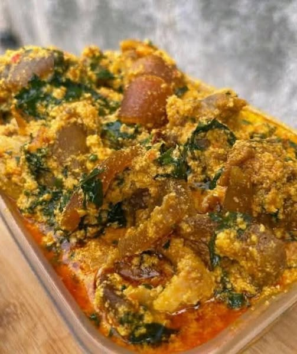

Oshiki is a traditional Nigerian dish made from yam flour and water, often served with a variety of stews and soups. Oshiki is a beloved Nigerian staple, a smooth, earthy, and deeply satisfying swallow food made from yam, cassava, or unripe plantain flour. The flour is carefully stirred into boiling water, cooked until it forms a thick, uniform, dark-brown dough with a velvety, stretchy texture. Traditionally served with rich, flavorful soups like ewedu (made with jute leaves), gbegiri (a creamy bean soup), or the fiery obè ilá (okro soup), Oshiki is often paired with assorted meats—including cow leg, tripe, or shaki—and dried fish, all simmered in a peppery, palm-oil-based broth. To eat it, you tear off a small lump of the smooth dough, flatten it with your thumb, and use it to scoop up the soup and meat, delivering a burst of spicy, savory flavors in every bite. It's comfort food at its finest—hearty, aromatic, and deeply rooted in Yoruba culinary tradition